Chapter 5 Bar Graph, Slope Chart and Point plot
These packages are required to be loaded in this chapter, where we will focus on drawing a bar graph, slope chart and point plot. I think these three plots are most commonly used in my research field (perceptual science).
library(tidyverse)
library(cowplot)
library(smplot2)5.1 Bar graph
Even if a bar graph does not provide as much information as a boxplot or a violin plot, it has been proved extremely useful due to its minimal aesthetics. Moreover, in general, providing a bar, jittered individual points and a respective error bar is enough in psychological research.
For this reason, I think that it is necessary to discuss in detail about the usage of bar graph.
Over time, I’ve learned that many users directly use the aesthetic defaults of sm_bar(). So in this chapter, we will discuss ways to overcome the defaults.
set.seed(211) # generate random data
group1 = abs(rnorm(20,2.5,1))
group2 = abs(rnorm(20,5,1))
Subject <- rep(paste0('S',seq(1:20)), 2)
Data <- data.frame(Value = matrix(c(group1,group2),ncol=1))
Group <- rep(c('Group 1', 'Group 2'), each = length(group1))
df <- cbind(Subject, Data, Group)After generating the random data, let’s plot a bar graph. In this case, there are two distinct instances / time points.
ggplot(data = df, mapping = aes(x = Group, y = Value, color = Group)) +
sm_bar() +
scale_color_manual(values = sm_color('blue','orange')) +
ggtitle('A bar graph')
sm_bar() automatically uses sm_hgrid(), which provides horizontal major grids. Moreover, it has arguments borders and legends so that the user can wish to remove border or legend easily.
ggplot(data = df, mapping = aes(x = Group, y = Value, color = Group)) +
sm_bar(borders = FALSE) +
scale_color_manual(values = sm_color('blue','orange')) +
ggtitle('A bar graph')
The default of the error bar’s type is standard error, i.e., errorbar_type = 'se'. There are three options: standard error (se), standard deviation (sd) and 95% confidence interval (ci). The sd and ci are shown below.
ggplot(data = df, mapping = aes(x = Group, y = Value, color = Group)) +
sm_bar(errorbar_type = 'sd') +
scale_color_manual(values = sm_color('blue','orange')) +
ggtitle('A bar graph')
ggplot(data = df, mapping = aes(x = Group, y = Value, color = Group)) +
sm_bar(errorbar_type = 'ci') +
scale_color_manual(values = sm_color('blue','orange')) +
ggtitle('A bar graph')
You can also use theme() to finely modify the aesthetics. For instance, you can remove the title of the x-axis Group. ylab() and xlab() are functions to modify the title of y- and x-axes.
ggplot(data = df, mapping = aes(x = Group, y = Value, color = Group)) +
sm_bar() +
scale_color_manual(values = sm_color('blue','orange')) +
theme(axis.title.x = element_blank()) +
ggtitle('Reading performance in children') +
ylab('Reading speed') 
5.1.1 Scaling the y-axis
Upon a closer look, we realize that the y-axis starts from below 0 even if all data are higher than 0. We can specify the y-axis limit manually using scale_y_continuous() between 0 and 8.
ggplot(data = df, mapping = aes(x = Group, y = Value, color = Group)) +
sm_bar() +
scale_color_manual(values = sm_color('blue','orange')) +
theme(axis.title.x = element_blank()) +
ggtitle('Reading performance in children') +
ylab('Reading speed') +
scale_y_continuous(limits = c(0,8))
Although we have specified that the y-axis limit begins from 0 and ends at 7, there is still a small margin below 0. What is going on here?
The default of ggplot2 is that there is always a small margin below the lowest point of the y-axis limit and above the largest point of the y-axis.The empty space below 0 and above 7 can be removed by using expand = c(0,0) within scale_y_continuous().
ggplot(data = df, mapping = aes(x = Group, y = Value, color = Group)) +
sm_bar() +
scale_color_manual(values = sm_color('blue','orange')) +
theme(axis.title.x = element_blank()) +
ggtitle('Reading performance in children') +
ylab('Reading speed') +
scale_y_continuous(limits = c(0,8), expand = c(0,0))
If you would like a small margin between the bottom of the plot and the bars, you could so by replacing 0 with 0.05, i.e., expand = c(0,0.05). Then the vertical margin will slightly increase.
ggplot(data = df, mapping = aes(x = Group, y = Value, color = Group)) +
sm_bar() +
scale_color_manual(values = sm_color('blue','orange')) +
theme(axis.title.x = element_blank()) +
ggtitle('Reading performance in children') +
ylab('Reading speed') +
scale_y_continuous(limits = c(0,8), expand = c(0,0.05))
5.1.2 Plotting individual points with unique colors
Plotting each point with distinct color is possible if each color is specified for each subject as part of the aesthetics, i.e., aes(..., color = Subject), where Subject is the name of the data frame’s column that provides identifiers for each observation/person.
ggplot(data = df, mapping = aes(x = Group, y = Value, color = Subject)) +
sm_bar() +
theme(axis.title.x = element_blank()) +
ggtitle('Reading performance in children') +
ylab('Reading speed') +
scale_y_continuous(limits = c(0,8), expand = c(0,0.05)) +
scale_color_manual(values = sm_palette(16))
5.1.3 Other parameters
You can also control the jitter’s width by setting point_jitter_width. The default is sm_bar(..., point_jitter_width = 0.12). Let’s increase it to 0.2.
ggplot(data = df, mapping = aes(x = Group, y = Value, color = Subject)) +
sm_bar(point_jitter_width = 0.2) +
theme(axis.title.x = element_blank()) +
ggtitle('Reading performance in children') +
ylab('Reading speed') +
scale_y_continuous(limits = c(0,8), expand = c(0,0.05)) +
scale_color_manual(values = sm_palette(16))
You can also adjust different parameters of the bar graph using bar.params, err.params and point.params.
bar.params = list()feeds arguments, such ascolor,fill,widthandalphatogeom_bar()to plot the bar.err.params = list()feeds arguments, such ascolor, togeom_linerange()to plot the error bar.point.params = list()feeds arguments, such ascolor,fill, andalphatogeom_point()to plot the jittered individual points....is generic argument that can affect the bar graph, error bar and points if these do not have defaults set withinbar.params = list(),err.params = list()andpoint.params = list().
In the example below, various aspects of the plot have been modified, such as the bar’s width, alpha as well as points’ stroke, which refers to the thickness of their border.
ggplot(data = df, mapping = aes(x = Group, y = Value, fill = Group)) +
sm_bar(bar.params = list(fill = 'gray80', width = 0.5, alpha = 0.5),
point.params = list(size = 2.5, shape = 21, color ='white',
stroke = 0.75)) +
scale_y_continuous(limits = c(0,8), expand = c(0,0.05)) +
scale_fill_manual(values = sm_color('blue', 'orange')) 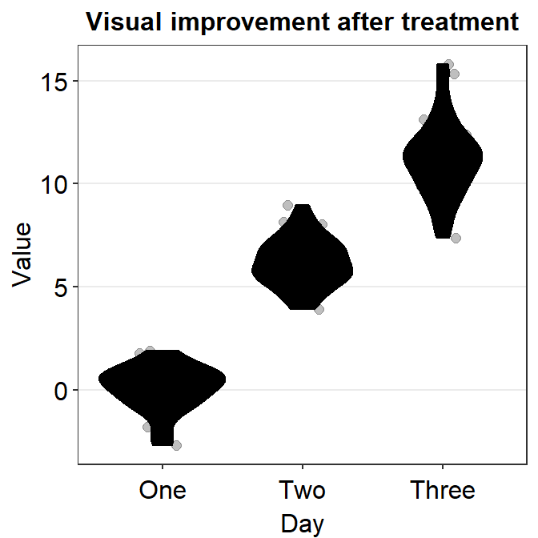
Now, let’s get rid of all the defaults imposed by sm_bar() to see what happens by including bar.params = list() and point.params = list().
ggplot(data = df, mapping = aes(x = Group, y = Value, fill = Group)) +
sm_bar(bar.params = list(),
point.params = list(),
err.params = list()) +
scale_y_continuous(limits = c(0,8), expand = c(0,0.05)) +
scale_fill_manual(values = sm_color('blue', 'orange')) 
Now, the size of the point is smaller. Let’s add size as a generic paramater to control for the aesthetics.
ggplot(data = df, mapping = aes(x = Group, y = Value, fill = Group)) +
sm_bar(size = 3, bar.params = list(),
point.params = list(),
err.params = list()) +
scale_y_continuous(limits = c(0,8), expand = c(0,0.05)) +
scale_fill_manual(values = sm_color('blue', 'orange')) 
In this case, size affects both the points and the error bar, but not the bar plot because geom_bar() does not accept size as argument.
How about width?
ggplot(data = df, mapping = aes(x = Group, y = Value, fill = Group)) +
sm_bar(width = 0.5, bar.params = list(),
point.params = list(),
err.params = list()) +
scale_y_continuous(limits = c(0,8), expand = c(0,0.05)) +
scale_fill_manual(values = sm_color('blue', 'orange')) ## Warning in geom_point(position = <environment>, width = 0.5): Ignoring unknown
## parameters: `width`## Warning in stat_summary(fun.data = function (x, mult = 1) : Ignoring unknown
## parameters: `width`
We see that width only affects the bar’s width because it does not affect the points and error bars as shown by the warning above Ignoring unknown parameters: width.
Let’s try fill and color next by setting them to black.
ggplot(data = df, mapping = aes(x = Group, y = Value)) +
sm_bar(fill = 'black',
color = 'black', bar.params = list(),
point.params = list(),
err.params = list()) +
scale_y_continuous(limits = c(0,8), expand = c(0,0.05)) ## Warning in stat_summary(fun.data = function (x, mult = 1) : Ignoring unknown
## parameters: `fill`
We see that everything is 'black' now, affecting across the bar, error bar and the points. Now, as previously mentioned in the previous chapter, if we add parameters within xxx.params, we see that these parameters will ignore the generic ones.
ggplot(data = df, mapping = aes(x = Group, y = Value)) +
sm_bar(fill = 'black',
color = 'black', bar.params = list(width = 0.5, alpha = 0.80),
point.params = list(shape = 21, fill = 'gray90', color = 'black',
size = 2.5),
err.params = list(size = 1)) +
scale_y_continuous(limits = c(0,8), expand = c(0,0.05)) 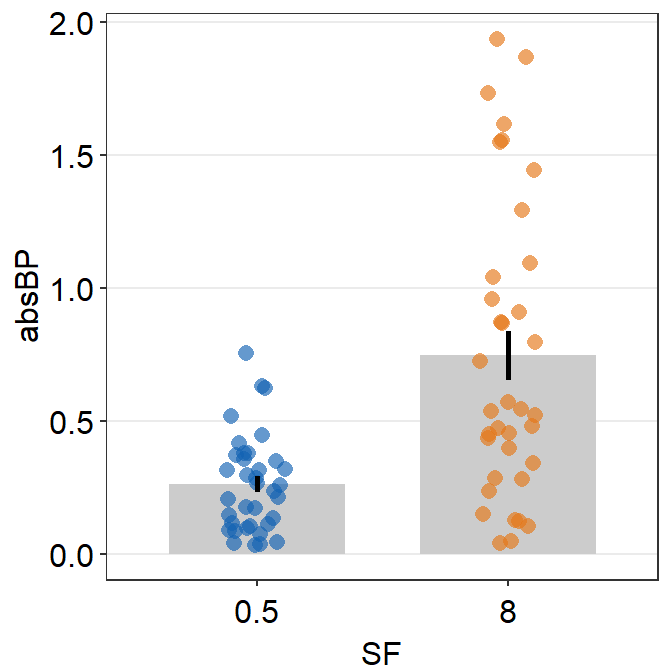
You can also set to remove the points by using points argument.
ggplot(data = df, mapping = aes(x = Group, y = Value)) +
sm_bar(fill = 'black',
color = 'black', bar.params = list(width = 0.5, alpha = 0.80),
point.params = list(shape = 21, fill = 'gray90', color = 'black',
size = 2.5),
err.params = list(size = 1),
points = FALSE) +
scale_y_continuous(limits = c(0,8), expand = c(0,0.05)) 
Obviously, this is not a good bar graph because we cannot see where the error bar begins. We can change the colors to blue and orange for each x level.
ggplot(data = df, mapping = aes(x = Group, y = Value, fill = Group)) +
sm_bar(bar.params = list(width = 0.5, alpha = 0.85),
point.params = list(),
err.params = list(size = 1),
points = FALSE) +
scale_y_continuous(limits = c(0,8), expand = c(0,0.05)) +
scale_fill_manual(values = sm_color('blue', 'orange')) 
We can see that sm_bar() can offer a huge flexibility for users to control over the aesthetics with relative ease while maintaining the minimalistic style.
5.1.4 Bar graph with data of multiple groups
In this section, we will load data set from online. Details about the data set are described in the section below entitled Point Plot. You do not need to understand the data set to follow this section.
df2 <- read_csv('https://www.smin95.com/amblyopia_random.csv')## Rows: 200 Columns: 5
## -- Column specification --------------------------------------------------------
## Delimiter: ","
## chr (3): Subject, Group, Condition
## dbl (2): absBP, SF
##
## i Use `spec()` to retrieve the full column specification for this data.
## i Specify the column types or set `show_col_types = FALSE` to quiet this message.df2a <- filter(df2, Condition == 'One')
df2a <- filter(df2, SF %in% c(0.5,8))
df2a$SF <- as.factor(df2a$SF)
df2a$Group <- as.factor(df2a$Group)
unique(df2a$Group)## [1] Amblyopia Normal
## Levels: Amblyopia NormalWe see that there are two groups in the data set: Amblyopia and Normal.
unique(df2a$SF)## [1] 0.5 8
## Levels: 0.5 8Also there are two conditions SF: 0.5 and 8.
Ideally, a plot that shows the data of these two groups and conditions would be very informative. Let’s attempt to plot such a bar graph.
ggplot(data = df2a, aes(x = SF, y = absBP, color = SF)) +
sm_bar() +
scale_color_manual(values= sm_color('blue','orange'))
Immediately we see that something is wrong here. There seem to be too many points in this bar graph compared to the sample size of each group per condition.
df2amb <- filter(df2a, Group == 'Amblyopia')
df2norm <- filter(df2a, Group == 'Normal')
length(unique(df2amb$Subject)) # 10 amblyopes## [1] 10length(unique(df2norm$Subject)) # 10 normal observers## [1] 10There are 10 subjects per group (Group) and condition (SF) but we see about 20 points per bar. It seems that the data of Amblyopia and Normal got combined at each SF. This is not a good representation of the data as we are interested in the difference between the two groups of observers.
Let’s add group = Group within aes() to group the data based on each Group.
ggplot(data = df2a, aes(x = SF, y = absBP, color = SF, group = Group)) +
sm_bar() +
scale_color_manual(values= sm_color('blue','orange'))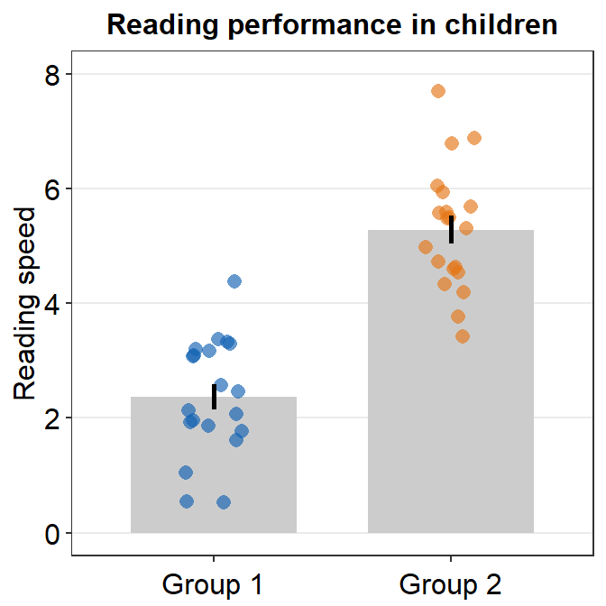
We see there are two error bars in the midst of the orange plots, indicating that the data are superimpsoed on top of another. Let’s change border color of the bar to verify this observation.
ggplot(data = df2a, aes(x = SF, y = absBP, color = SF, group = Group)) +
sm_bar(alpha = 0.3,
bar.params = list(color = 'black')) +
scale_color_manual(values= sm_color('blue','orange'))
In fact, it turns out that our observation is true. We need to separate their position (i.e., dodge) using position_dodge() across all visual components of the bar graph: err.params, bar.params and point.params. This can be done easily by setting it as a generic parameter ....
ggplot(data = df2a, aes(x = SF, y = absBP, color = Group, group = Group)) +
sm_bar(alpha = 0.5,
position = position_dodge(width = 1),
legends = T,
bar.params = list(width = 0.8, alpha = 1,
color = 'transparent',
fill = 'gray80')) +
scale_color_manual(values= sm_color('blue','orange'))
Let’s add some jitter to the points. This part is quite complicated. In this example, point.params has to be set separately using position_jitterdodge() so that the points remained jittered and dodged at the same time.
ggplot(data = df2a, aes(x = SF, y = absBP, color = Group, group = Group)) +
sm_bar(position = position_dodge(width = 1),
bar.params = list(width = 0.8, alpha = 1,
color = 'transparent',
fill = 'gray80'),
point.params = list(alpha=0.5,
position = position_jitterdodge(jitter.width = 0.12,
dodge.width = 1)),
legends = T) +
scale_color_manual(values= sm_color('blue','orange')) +
scale_y_continuous(expand = c(0,0.05))
We have now successfully plotted the bar graph using data of multiple groups and conditions. Another solution is to plot each group per panel and combine the two panels into one figure using sm_common_axis(), which will be described in the later part of the book.
5.2 Slope chart
A slope chart is useful to describe changes between two different time points for each measurement (ex. a participant).
Sometimes, it is a great alternative to showing bar graph because bar graph does not show individual trends/changes.
Let’s generate some random data to explore this difference.
set.seed(201) # generate random data
before = abs(rnorm(20,2.5,1))
after = abs(rnorm(20,5,1))
Subject <- rep(paste0('S',seq(1:20)), 2)
Data <- data.frame(Value = matrix(c(before,after),ncol=1))
beforeAfter <- rep(c('Before', 'After'), each = length(before))
df <- cbind(Subject, Data, beforeAfter)As mentioned in the previous, factor level is important when dealing with discrete variable. In this case, the two factor levels of the data are Before and After.
Since, in the context of time, Before is the first level followed by After, let’s set the level properly so that the alphabetical order is overturned.
df$beforeAfter <- factor(df$beforeAfter, levels = c('Before','After'))
df$beforeAfter## [1] Before Before Before Before Before Before Before Before Before Before
## [11] Before Before Before Before Before Before Before Before Before Before
## [21] After After After After After After After After After After
## [31] After After After After After After After After After After
## Levels: Before AfterBased on the output, we have successfully ordered the factor levels. Now, we can start plotting a slope chart.
ggplot(data = df, aes(x = beforeAfter, y = Value, fill = beforeAfter)) +
sm_slope(group = Subject) +
scale_fill_manual(values= sm_color('blue','orange'))
Notice that each line is grouped for each subject. For this to properly happen, group argument has to be specified within sm_slope(). In fact, due to the update from smplot2, the user is required to specify this at the level of sm_slope() rather than at aes().
Also, to assign a unique color to each discrete level in x-axis, fill has to be specified because the default shape of the point is 21, which is a circle with borders.
Now let’s add labels for the x-axis tick. To do so, include labels = c('Before', 'After').
ggplot(data = df, aes(x = beforeAfter, y = Value, fill = beforeAfter)) +
sm_slope(group = Subject, labels = c('Before', 'After')) +
scale_fill_manual(values= sm_color('blue','orange'))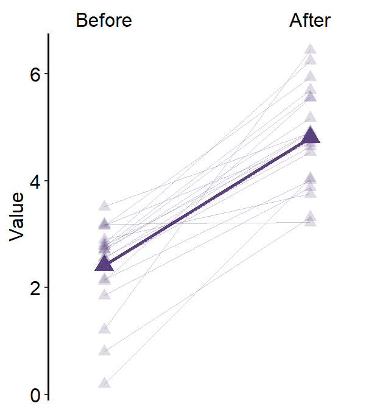
If you would like to do statistical test that is paired, such as a paired t-test, then the apt means to visualize the data would be to use slope chart, rather than a bar graph. This is because the p-value gets smaller as the increasing proportion of the sample experiences a change in the same direction (i.e., all increase). It is the direction of change that is important, rather than the magnitude of change.
Hence, it is possible that the p-value is extremely small even if the standard error is quite broad.
ggplot(data = df, aes(x = beforeAfter, y = Value, color = beforeAfter)) +
sm_bar() +
scale_color_manual(values= sm_color('blue','orange'))
Notice that bar graph can be used when the observations are not paired between two instances, whereas a slope chart requires it. Hence, if you are interested in seeing the general trend of changes, then a slope chart is a better option.
5.2.1 Slope chart with mean plot
Due to several requests from students, I have added the feature of showing a mean plot using sm_slope() as an update from smplot2.
Just by setting show_mean = TRUE, you can draw the mean.
ggplot(data = df, aes(x = beforeAfter, y = Value, fill = beforeAfter)) +
sm_slope(labels = c('Before','After'), group = Subject,
show_mean = TRUE) +
scale_fill_manual(values= sm_color('blue','orange'))
When a mean plot is included in slope chart, I personally prefer to visually emphasize the mean plot while treating the individual plots as shadow. Hence, I would use similar colors across all levels. Here is an example below using blue colors. The maen plot should be slightly larger than the individual points from the shadow.
ggplot(data = df, aes(x = beforeAfter, y = Value)) +
sm_slope(labels = c('Before','After'), group = Subject,
point.params = list(alpha = 0.4, size = 2.5, color = 'white',
shape = 21, fill = sm_color('skyblue')),
line.params = list(color = sm_color('skyblue'),
alpha = 0.3),
avgPoint.params = list(color='transparent', shape = 21,
size = 4, fill = sm_color('blue')),
avgLine.params = list(color = sm_color('blue'), size = 1),
show_mean = TRUE)
point.paramsfeeds arguments togeom_point()to plot the points with specifiedcolor,fill,size,shapeandalpha.line.paramsfeeds arguments togeom_line()to plot the points with specifiedcolor,sizeandalpha.avgPoint.paramsfeeds arguments togeom_point()to plot the average point with specifiedcolor,fill,size,shapeandalpha.avgLine.paramsfeeds arguments togeom_line()to plot the average plot (line) with specifiedcolor,sizeandalpha.err.paramsfeeds arguments togeom_linerange()to plot the error bar with specifiedcolor,sizeetc.xtick.paramsfeeds arguments toscale_x_discrete()so that the user can have control over specific aesthetics of the x-tick. Type?scale_x_discrete()for more information....is generic paramater that can affect multiple components of the plot.
You can also change the stroke of the points and lines (thickness of the borders) as a stylistic preference. To make the stroke of the average points more stand out in the midst of the colors, alpha of the points can be raised.
ggplot(data = df, aes(x = beforeAfter, y = Value)) +
sm_slope(labels = c('Before','After'), group = Subject,
point.params = list(alpha = 0.5, size = 2.5, color = 'white',
shape = 21, fill = sm_color('skyblue'),
stroke = 0.6),
line.params = list(color = sm_color('skyblue'),
alpha = 0.3),
avgPoint.params = list(color='white', shape = 21,
size = 4, fill = sm_color('blue'),
stroke = 1),
avgLine.params = list(color = sm_color('blue'), size = 1),
show_mean = TRUE)
As before, let’s remove the defaults by providing arguments in this format xxx.param = list().
ggplot(data = df, aes(x = beforeAfter, y = Value)) +
sm_slope(labels = c('Before','After'), group = Subject,
point.params = list(),
line.params = list(),
avgPoint.params = list(),
avgLine.params = list(),
show_mean = TRUE)
Now we see that the mean and the individual plots are indistinguishable.
ggplot(data = df, aes(x = beforeAfter, y = Value)) +
sm_slope(color = sm_color('purple'), labels = c('Before','After'), group = Subject,
point.params = list(),
line.params = list(),
avgPoint.params = list(),
avgLine.params = list(),
show_mean = TRUE)By specifying color as a generic parameter (...) to purple, we have changed all components of the plot to purple.
Now we can choose specific alphas for individual plots in xxx.params to distinguish from the mean and the individual plots.
ggplot(data = df, aes(x = beforeAfter, y = Value)) +
sm_slope(color = sm_color('purple'), labels = c('Before','After'), group = Subject,
point.params = list(alpha = 0.2),
line.params = list(alpha = 0.2),
avgPoint.params = list(),
avgLine.params = list(),
show_mean = TRUE)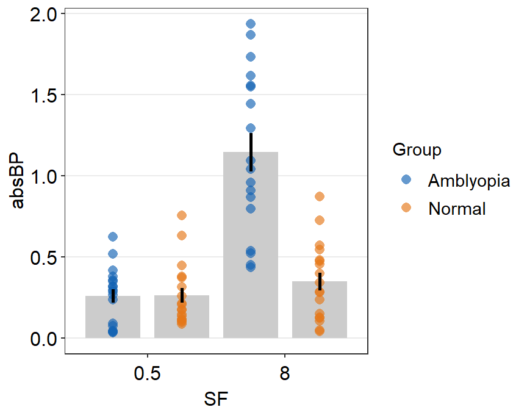
Now we see the average plot in the midst of the purple sea. Let’s enlarge it slightly by specifying the parameters within avgPoint.params and avgLine.params. We can also change the shape to triangle by setting the generic parameter (...) as shape = 17.
ggplot(data = df, aes(x = beforeAfter, y = Value)) +
sm_slope(color = sm_color('purple'),
shape = 17,
labels = c('Before','After'),
group = Subject,
point.params = list(alpha = 0.2),
line.params = list(alpha = 0.2),
avgPoint.params = list(size = 4),
avgLine.params = list(size = 1),
show_mean = TRUE)
5.2.2 Slope chart with mean plot and error bar
Error bar can also be added to show either standard error (errorbar_type = 'se'), standard deviation (errorbar_type = 'sd', default) or 95% confidence interval (errorbar_type = 'ci') by setting sm_slope(..., show_err = TRUE).
ggplot(data = df, aes(x = beforeAfter, y = Value)) +
sm_slope(color = sm_color('purple'),
shape = 17,
labels = c('Before','After'),
group = Subject,
point.params = list(alpha = 0.2),
line.params = list(alpha = 0.2),
avgPoint.params = list(size = 4),
avgLine.params = list(size = 1),
show_mean = TRUE,
show_err = TRUE)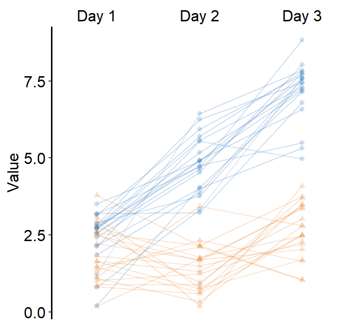
As in sm_bar(), you can control the specific aesthetics of the error bar using err.param.
err.params = list()feeds arguments, such ascolor, togeom_linerange()to plot the error bar.
You can control the width of the error bar by changing the size within err.params.
ggplot(data = df, aes(x = beforeAfter, y = Value)) +
sm_slope(color = sm_color('purple'),
shape = 17,
labels = c('Before','After'),
group = Subject,
point.params = list(alpha = 0.2),
line.params = list(alpha = 0.2),
avgPoint.params = list(size = 4),
avgLine.params = list(size = 1),
err.params = list(size = 1),
show_mean = TRUE,
show_err = TRUE)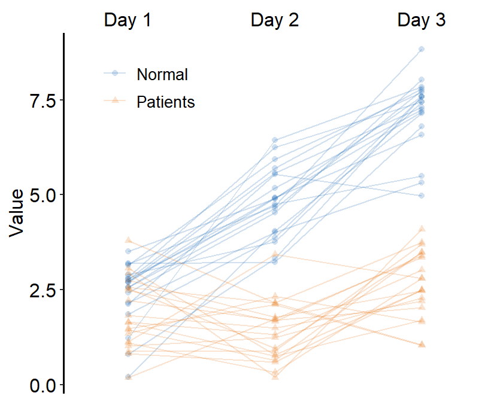
This form of slope chart highly resembles a point plot with a shadow, which we will discuss below using the function sm_pointplot().
5.2.3 Slope chart with multiple x levels
Obviously, you can plot the slope chart when there are more than two discrete x levels. Let’s generate data with 3 x levels.
set.seed(201) # generate random data
day1 = abs(rnorm(20,2.5,1))
day2 = abs(rnorm(20,5,1))
day3 = abs(rnorm(20,7.5,1))
Subject <- rep(paste0('S',seq(1:20)), 3)
Data <- data.frame(Value = matrix(c(day1,day2,day3),ncol=1))
Day <- rep(c('Day 1', 'Day 2', 'Day 3'), each = length(day1))
df <- cbind(Subject, Data, Day)Since there are 3 discrete x-levels, labels must be modified accordingly.
ggplot(data = df, aes(x = Day, y = Value)) +
sm_slope(color = sm_color('purple'),
shape = 17,
labels = c('Day 1','Day 2', 'Day 3'),
group = Subject,
point.params = list(alpha = 0.2),
line.params = list(alpha = 0.2),
avgPoint.params = list(size = 4),
avgLine.params = list(size = 1),
err.params = list(size = 1),
show_mean = TRUE,
show_err = TRUE)
Now we have a mean plot with error bar representing standard deviation with a shadow of individual plots behind at 3 discrete x-levels.
5.2.4 Slope chart with multiple groups and x levels
set.seed(201) # generate random data
day1 = abs(rnorm(20,2.5,1))
day2 = abs(rnorm(20,5,1))
day3 = abs(rnorm(20,7.5,1))
Subject <- rep(paste0('N',seq(1:20)), 3)
Data <- data.frame(Value = matrix(c(day1,day2,day3),ncol=1))
Day <- rep(c('Day 1', 'Day 2', 'Day 3'), each = length(day1))
df <- cbind(Subject, Data, Day)
df$group <- 'Normal'
set.seed(191) # generate random data
day1 = abs(rnorm(20,1.5,1))
day2 = abs(rnorm(20,1.8,1))
day3 = abs(rnorm(20,2.3,1))
Subject <- rep(paste0('P',seq(1:20)), 3)
Data <- data.frame(Value = matrix(c(day1,day2,day3),ncol=1))
Day <- rep(c('Day 1', 'Day 2', 'Day 3'), each = length(day1))
df2 <- cbind(Subject, Data, Day)
df2$group <- 'Patients'
df3 <- rbind(df,df2)This data set df3 has two groups: Normal and Patients. Each group has 20 Subjects and has three days of data.
Important: each subject has to have unique identifiers. Across multiple groups, there cannot be same identifiers such as S10. Therefore, in this example, all Normal observers are listed as N1, N2 etc, and all Patients are listd as P1, P2 etc.
Let’s start an example without the mean plot, where show_mean = FALSE (i.e., default). We will provide unique color and shape to each group.
ggplot(data = df3, aes(x = Day, y = Value, color = group,
shape = group, group = group)) +
sm_slope(labels = c('Day 1','Day 2', 'Day 3'),
group = Subject,
point.params = list(alpha = 0.2),
line.params = list(alpha = 0.2),
avgPoint.params = list(size = 4),
avgLine.params = list(size = 1),
err.params = list(size = 1)) +
scale_color_manual(values = sm_color('blue','orange')) +
scale_shape_manual(values = c(16,17))You can also add legends by setting legends = TRUE and put in the upperleft part of the plot.
ggplot(data = df3, aes(x = Day, y = Value, color = group,
shape = group, group = group)) +
sm_slope(labels = c('Day 1','Day 2', 'Day 3'),
group = Subject,
point.params = list(alpha = 0.2),
line.params = list(alpha = 0.2),
avgPoint.params = list(size = 4),
avgLine.params = list(size = 1),
err.params = list(size = 1),
legends = TRUE) +
scale_color_manual(values = sm_color('blue','orange')) +
scale_shape_manual(values = c(16,17)) +
theme(legend.position = c(0.2,0.85),
legend.title = element_blank(),
legend.text = element_text(size = 10))
Next, we can also draw the mean plot for each group by setting show_mean = TRUE.
ggplot(data = df3, aes(x = Day, y = Value, color = group,
shape = group, group = group)) +
sm_slope(labels = c('Day 1','Day 2', 'Day 3'),
group = Subject,
point.params = list(alpha = 0.2),
line.params = list(alpha = 0.2),
avgPoint.params = list(size = 4),
avgLine.params = list(size = 1),
err.params = list(size = 1),
legends = TRUE,
show_mean = TRUE) +
scale_color_manual(values = sm_color('blue','orange')) +
scale_shape_manual(values = c(16,17)) +
theme(legend.position = c(0.2,0.85),
legend.title = element_blank(),
legend.text = element_text(size = 10))
Here, we see that the average line is across all presented data (from Normal and Patients). This is not what we wanted. To resolve this issue, set many_groups = TRUE, which then plots the average line for each group.
ggplot(data = df3, aes(x = Day, y = Value, color = group,
shape = group, group = group)) +
sm_slope(labels = c('Day 1','Day 2', 'Day 3'),
group = Subject,
point.params = list(alpha = 0.2),
line.params = list(alpha = 0.2),
avgPoint.params = list(size = 4),
avgLine.params = list(size = 1),
err.params = list(size = 1),
legends = TRUE,
show_mean = TRUE,
many_groups = TRUE) +
scale_color_manual(values = sm_color('blue','orange')) +
scale_shape_manual(values = c(16,17)) +
theme(legend.position = c(0.2,0.85),
legend.title = element_blank(),
legend.text = element_text(size = 10))This plot can appear quite complicated. The point of this subsection is to show the flexibility of sm_slope(), not necessarily to talk about my preferred practices of data visualization.
Another solution is to draw a separate slope chart for each group and put them together using sm_common_axis(), which is described in the subsequent chapter called Combining Plots with Common Axes in the Data Analysis section of the book.
5.3 Point plot
In this chapter, we will use a fake data set that I have generated by eyeballing Figure 3 from this paper (PDF):
Yu Mao, Seung Hyun Min, Shijia Chen, Ling Gong, Hao Chen, Robert F. Hess, Jiawei Zhou. Binocular imbalance in amblyopia depends on spatial frequency in binocular combination. IOVS. 2020;61(8):7.
This data set contains both subject groups (Normal and Amblyopia) and conditions (Condition).
We will only use data from the first condition (Condition = 'One') and convert the numerical column SF into categorical column by using the as.factor() function.
df <- read_csv('https://www.smin95.com/amblyopia_random.csv')
df1 <- filter(df, Condition == 'One')
df1$SF <- as.factor(df1$SF)sm_pointplot() groups each observation based on a specific variable, such as Subject or group. Therefore, when sm_pointplot() is used, the grouping always have to be specified like the following: ggplot(aes(x = ..., y = ..., group = xxx)).
ggplot(data = df1, aes(x = SF, y = absBP,
color = Group, group = Group)) +
sm_pointplot()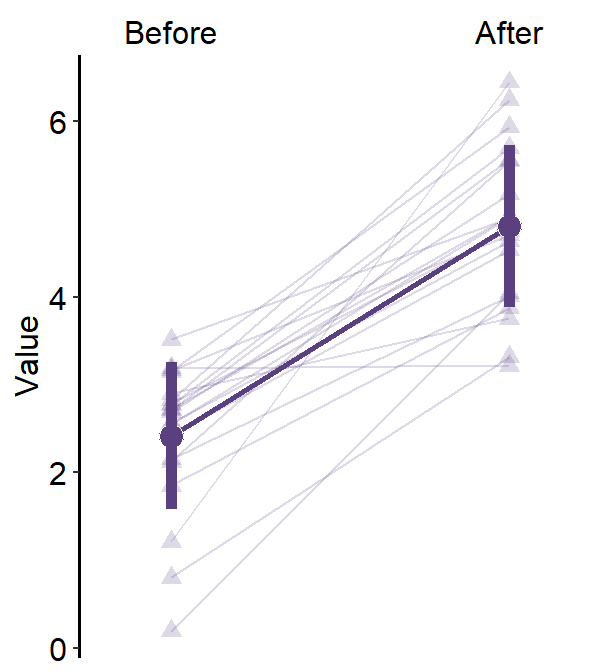
We can customise the colors as well in a standard way using sm_color_manual(). The default shape of the point is 16, therefore it has no border.
ggplot(data = df1, aes(x = SF, y = absBP,
color = Group, group = Group)) +
sm_pointplot() +
scale_color_manual(values = sm_color('darkred', 'viridian'))
However, we see that the position of the two plots is overlapped! Therefore, we cannot see where the error bar of the darkred plot (Normal) begins and where the viridian plot (Amblyopia) ends.
This is where the generic variable ... in smplot2 comes in handy. You will need to dodge all components of a plot (error bar, point, line) from another plot’s entire components along the x axis. This can be done using the position_dodge() function. Otherwise, you might have to dodge one component by one separately.
The argument position_dodge(width = ...) determines the size of the dodging distance between the plots.
ggplot(data = df1, aes(x = SF, y = absBP,
color = Group, group = Group)) +
sm_pointplot(position = position_dodge(width = 0.05)) +
scale_color_manual(values = sm_color('darkred', 'viridian'))
5.3.1 Data with more than two groups
What happens if we have data more than 3 groups? Let’s make a fake dataset using df1.
set.seed(1412)
df1a <- df1 %>% filter(Group == 'Amblyopia')
df1a$absBP <- df1a$absBP + abs(rnorm(50,0,0.1))
df1a$Group <- 'Myopia'
df1a$Subject <- rep(paste0('M',1:10),5)
df2 <- rbind(df1, df1a)
set.seed(111)
df1a$absBP <- df1a$absBP + abs(rnorm(50,0.2,0.2))
df1a$Group <- 'Aniso'
df1a$Subject <- rep(paste0('AN', 1:10),5)
df2 <- rbind(df2, df1a)Now we have a data frame df2 that has four groups across five spatial frequencies (SF).
unique(df2$Group)## [1] "Amblyopia" "Normal" "Myopia" "Aniso"Now let’s plot a point plot using sm_pointplot().
ggplot(data = df2, aes(x = SF, y = absBP,
color = Group, group = Group)) +
sm_pointplot() +
scale_color_manual(values = sm_color('darkred', 'viridian','skyblue','purple'))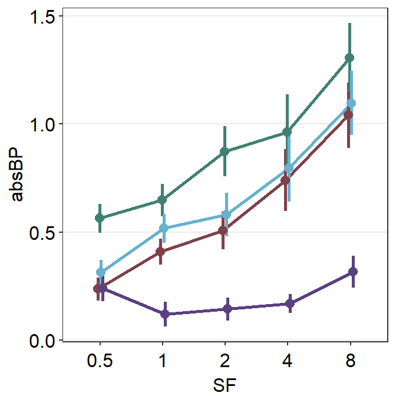
We immediately see that the plots are noticeably overlapped. This becomes a huge issue if the user attempts to plot repeated-measures data (i.e., each participant measured across time) of multiple groups/condition in a single panel. Fortunately, we can resolve this issue by using position_dodge().
ggplot(data = df2, aes(x = SF, y = absBP,
color = Group, group = Group)) +
sm_pointplot(position = position_dodge(width = 0.05)) +
scale_color_manual(values = sm_color('darkred', 'viridian','skyblue','purple'))
Let’s increase the width more because we still see a large overlap and not see where the error bars begin and end.
ggplot(data = df2, aes(x = SF, y = absBP,
color = Group, group = Group)) +
sm_pointplot(position = position_dodge(width = 0.08)) +
scale_color_manual(values = sm_color('darkred', 'viridian','skyblue','purple'))
By using the function position_dodge(), we can see each plot quite clearly.
Following is the equivalent code but it only nudges the error bar because it does not take advantage of using a generic parameter ... to control the aesthetics. Instead it uses err.params = list(position = position_dodge(width = ...)).
ggplot(data = df2, aes(x = SF, y = absBP,
color = Group, group = Group)) +
sm_pointplot(err.params = list(position = position_dodge(width = 0.08))) +
scale_color_manual(values = sm_color('darkred', 'viridian','skyblue','purple'))
Notice that only the error bars have shifted, not the lines and points. We can nudge all components of the plot using xxx.params. These are:
err.paramsfeeds arguments togeom_linerange()to plot the error bar with specifiedcolor,sizeetc.avgPoint.paramsfeeds arguments togeom_point()to plot the average point with specifiedcolor,fill,size,shapeandalpha.avgLine.paramsfeeds arguments togeom_line()to plot the average line with specifiedcolor,sizeandalpha.point.paramsfeeds arguments togeom_point()to plot the points in the shadow with specifiedcolor,fill,size,shapeandalpha.line.paramsfeeds arguments togeom_line()to plot the lines in the shadow with specifiedcolor,sizeandalpha.
Notice that these components are also found in sm_slope().
ggplot(data = df2, aes(x = SF, y = absBP,
color = Group, group = Group)) +
sm_pointplot(err.params = list(position = position_dodge(width = 0.08)),
avgPoint.params = list(position = position_dodge(width = 0.08)),
avgLine.params = list(position = position_dodge(width = 0.08))) +
scale_color_manual(values = sm_color('darkred', 'viridian','skyblue','purple'))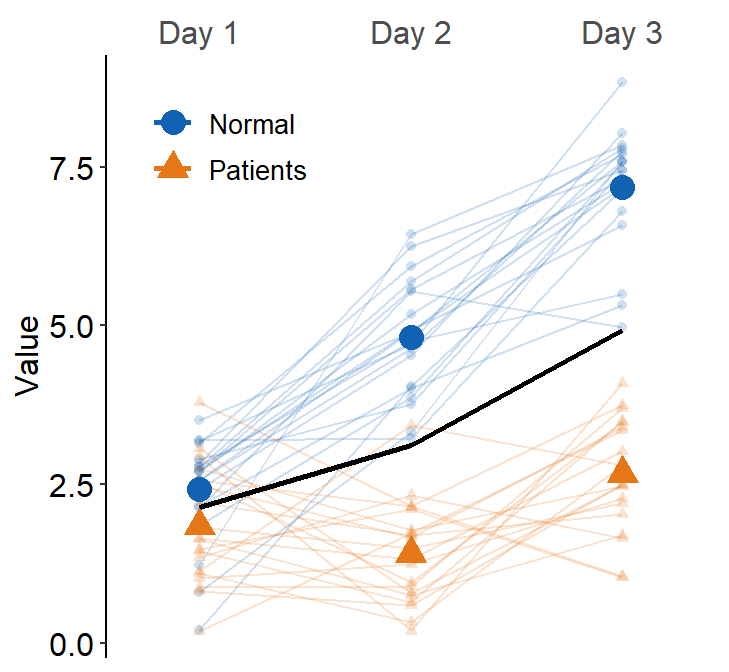
Notice that the size of the points have become smaller as the defaults of smplot2 have disappeared with the writing of xxx.params.
Now that we know how convenient it is to use the generic parameter ... to shift the plot’s position, lets use it to position_dodge and change the size of all components of the plots. Therefore, we will use size as a generic argument (sm_pointplot(size = ...,)).
ggplot(data = df2, aes(x = SF, y = absBP,
color = Group, group = Group)) +
sm_pointplot(size = 1, position = position_dodge(width = 0.1)) +
scale_color_manual(values = sm_color('darkred', 'viridian','skyblue','purple'))
5.3.2 Point plot with a shadow using data of one group
Now let’s say you would like to plot the mean data of one group (amblyopia) as well as individual plots behind the mean plot as a dim shadow by setting sm_pointplot(..., show_shadow = T).
Let’s use the same dataset and filter for observations from Condition = 'One' and Group = 'Amblyopia'.
df2a <- filter(df2, Group == 'Amblyopia')
df2a$SF <- as.factor(df2a$SF)When you decide to show shadow using sm_pointplot(), you need to specify group argument in sm_pointplot() in this format: sm_pointplot(group = xxx), where xxx is the name of the variable that includes identifiers for each observation.
In the shadow, each individual point has to be plotted, and the points have to be connected to form a line. This line has to be connected for each Subject in our example, therefore it should be set as sm_pointplot(group = Subject, ...).
Therefore, notice that there are two group arguments in this case. The first one is for the average plot in aes() in this format: ggplot(data, aes(x = ..., y =..., group = yyy)), where yyy is the name of the variable that includes identifiers for condition/group of all observers from which the average can be computed. The second group is within sm_pointplot() in this format: sm_pointplot(group = xxx), where xxx represents the name of the variable for individual identifiers.
ggplot(df2a, aes(x = SF, y = absBP, color = Group,
group = Group)) + # grouped for average
sm_pointplot(group = Subject, ## grouped for shadow
avgPoint.params = list(size=2.5),
show_shadow = T) +
scale_color_manual(values = sm_color('viridian'))
You can finely control the aesthetics of the shadow by using line.params = list() and point.params = list().
First let’s remove the defaults of the shadow.
ggplot(df2a, aes(x = SF, y = absBP, color = Group, group = Group)) +
sm_pointplot(group = Subject,
avgPoint.params = list(size=2.5),
line.params = list(),
point.params = list(),
show_shadow = T) +
scale_color_manual(values = sm_color('viridian'))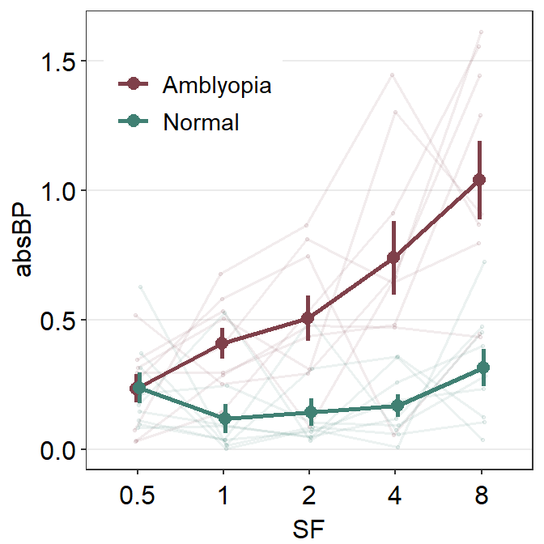
It is a mangled mess because they all have the same color viridian. We can make the shadow more transparent.
ggplot(df2a, aes(x = SF, y = absBP, color = Group, group = Group)) +
sm_pointplot(group = Subject,
avgPoint.params = list(size=2.5),
line.params = list(alpha = 0.3),
point.params = list(alpha = 0.3),
show_shadow = T) +
scale_color_manual(values = sm_color('viridian'))
Now it looks a lot better!
5.3.3 Point plot with a shadow using data of multiple groups
Now’ lets filter data from two groups Amblyopia and Normal. We can do so by using |, which means OR. & means AND.
df2b <- filter(df2, Group == 'Amblyopia' | Group == 'Normal')
df2b$SF <- as.factor(df2b$SF)
unique(df2b$Group)## [1] "Amblyopia" "Normal"After confirming that we have successfully filtered the data, we can plot the data of the two groups with a shadow for each group.
ggplot(df2b, aes(x = SF, y = absBP,
color = Group, group = Group)) +
sm_pointplot(group = Subject, show_shadow = T,
size = 1,
position = position_dodge(width = 0.08),
line.params = list(alpha = 0.1, size = 0.6),
point.params = list(alpha = 0.1, size = 0.6)) +
scale_color_manual(values = sm_color('darkred', 'viridian'))This is a point plot that includes everything we have learned thus far, such as position_dodge(), the importance of generic paramter ..., inclusion of a shadow show_shadow = T, and using two group arguments (one for the average plot, one for the individual points for the shadow).
5.3.4 Adding and modifying legends
You can also add legend to label the two colors by setting sm_pointplot(..., legends = TRUE)
ggplot(df2b, aes(x = SF, y = absBP,
color = Group, group = Group)) +
sm_pointplot(group = Subject, show_shadow = T,
size = 1,
position = position_dodge(width = 0.08),
line.params = list(alpha = 0.1, size = 0.6),
point.params = list(alpha = 0.1, size = 0.6),
legends = TRUE) +
scale_color_manual(values = sm_color('darkred', 'viridian'))
We can move the legend to the topleft part of the plot that has most empty space using theme(legend.position = ...). Also, the title of the legend can be removed with theme(legend.title = element_blank)
ggplot(df2b, aes(x = SF, y = absBP,
color = Group, group = Group)) +
sm_pointplot(group = Subject, show_shadow = T,
size = 1,
position = position_dodge(width = 0.08),
line.params = list(alpha = 0.1, size = 0.6),
point.params = list(alpha = 0.1, size = 0.6),
legends = TRUE) +
scale_color_manual(values = sm_color('darkred', 'viridian')) +
theme(legend.position = c(0.24,0.80),
legend.title = element_blank())
Note that the legend includes horizontal and vertical lines around the plot. The vertical line represents the error bar, and the horizontal line represents the line that connects between the points at various x levels. This symbol can be manually modified, such as removing the vertical line (which represents the error bar), by writing err.params = list(show.legend = FALSE).
ggplot(df2b, aes(x = SF, y = absBP,
color = Group, group = Group)) +
sm_pointplot(group = Subject, show_shadow = T,
size = 1,
position = position_dodge(width = 0.08),
line.params = list(alpha = 0.1, size = 0.6),
point.params = list(alpha = 0.1, size = 0.6),
err.params = list(show.legend = FALSE),
legends = TRUE) +
scale_color_manual(values = sm_color('darkred', 'viridian')) +
theme(legend.position = c(0.24,0.80),
legend.title = element_blank()) You can also think about controlling the ratio of the figure when saving the figure. In this example, base_height and base_width are specifically controlled for.
ggplot(df2b, aes(x = SF, y = absBP,
color = Group, group = Group)) +
sm_pointplot(group = Subject, show_shadow = T,
size = 1,
position = position_dodge(width = 0.08),
line.params = list(alpha = 0.1, size = 0.6),
point.params = list(alpha = 0.1, size = 0.6),
err.params = list(show.legend = FALSE),
legends = TRUE) +
scale_color_manual(values = sm_color('darkred', 'viridian')) +
theme(legend.position = c(0.24,0.80),
legend.title = element_blank()) -> pointplot
print(pointplot)save_plot('pointplot.png', pointplot, base_height = 2.8,
base_width = 4)